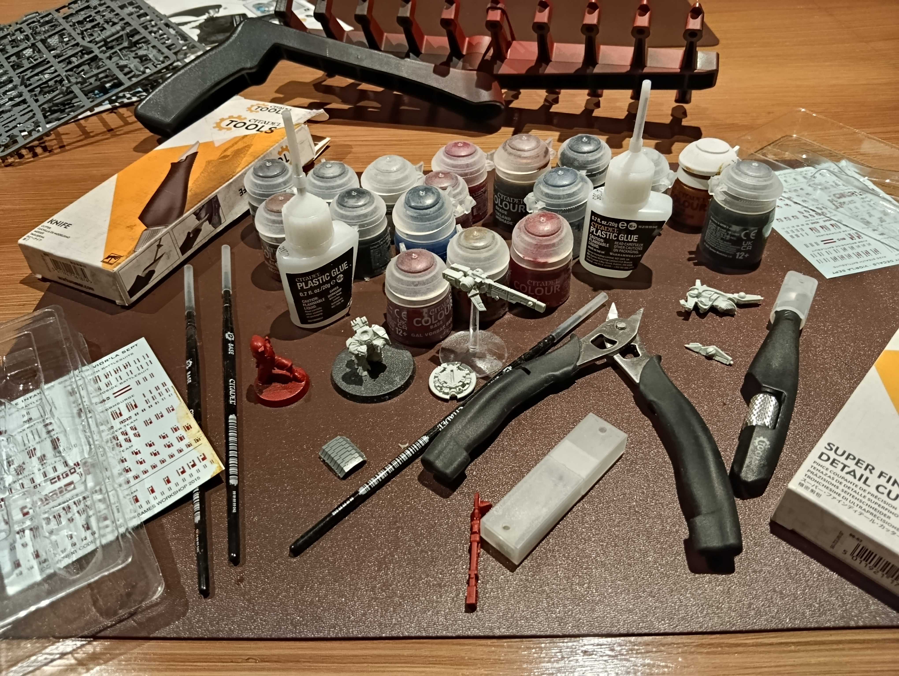

Figurines Warhammer
Assemblage, peinture et utilisation en matchs ou tournois des figurines
Assemblage, peinture et utilisation en matchs ou tournois des figurines

Warhammer 40,000 est un loisir que je pratique en dehors de mes études et qui combine modélisme, peinture et stratégie. Je joue principalement l'armée des T'au, une faction spécialisée dans le combat à distance et les technologies avancées.
J'apprécie particulièrement l'aspect créatif du hobby, qui consiste à assembler, personnaliser et peindre les différentes figurines de mon armée. Chaque modèle demande du temps et de la précision afin d'obtenir un résultat fidèle à l'univers du jeu tout en apportant sa propre touche personnelle.
Au-delà de l'aspect artistique, Warhammer est également un jeu de stratégie qui permet d'affronter d'autres joueurs lors de parties amicales ou de tournois, où la préparation de l'armée et les décisions prises pendant la partie jouent un rôle essentiel.

Chaque figurine suit plusieurs étapes : nettoyage des pièces, assemblage, préparation des surfaces puis application d'une sous-couche.
La peinture est ensuite réalisée couche par couche afin d'obtenir des détails précis, des effets d'ombrage et des éclaircissements permettant de donner du relief à la figurine.
Les dernières étapes consistent à réaliser les finitions, les socles et les éventuels effets spéciaux afin d'obtenir un rendu cohérent et réaliste.
Une fois les figurines terminées, elles rejoignent mon armée pour être utilisées lors de parties entre amis ou de tournois. Chaque nouvelle unité peinte contribue à enrichir l'armée et à lui donner une identité visuelle cohérente sur la table de jeu.
Le hobby Warhammer m'a permis de développer ma patience, ma minutie et mon sens du détail. La peinture de figurines demande de la précision et une capacité à travailler méthodiquement sur des projets parfois très longs.
Les parties et les tournois m'ont également appris à analyser rapidement une situation, à adapter ma stratégie et à prendre des décisions sous contrainte. Ces qualités sont utiles aussi bien dans le cadre de mes études que dans les projets techniques que je réalise.
Enfin, ce loisir m'a permis de rencontrer de nombreux passionnés et de participer à des événements favorisant l'échange, le partage d'expérience et l'esprit de communauté autour d'une passion commune.